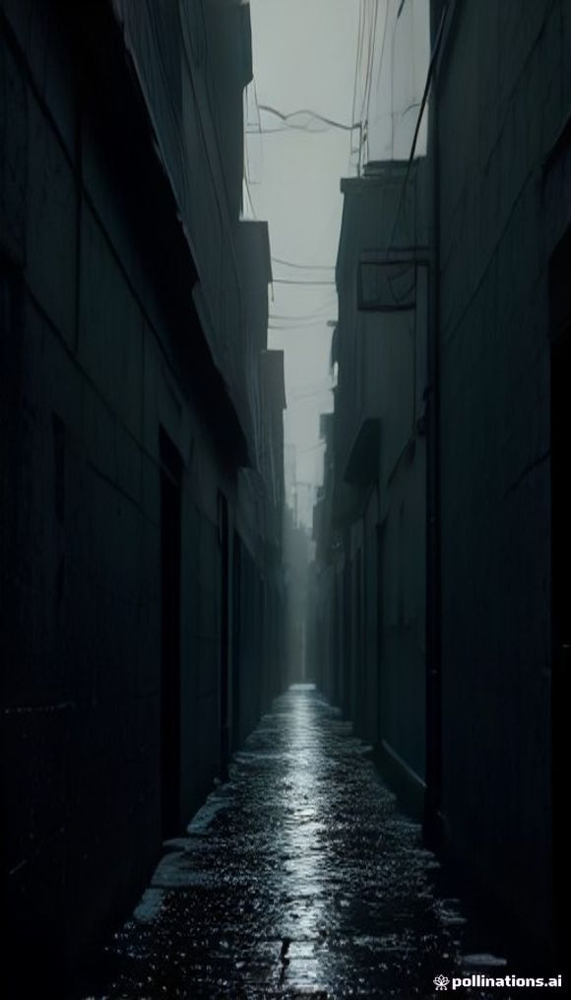
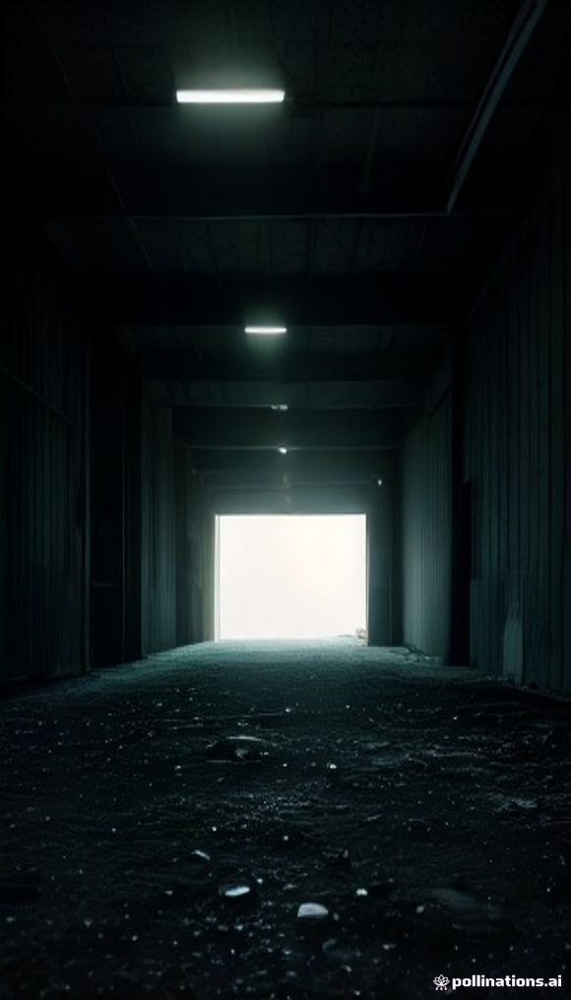
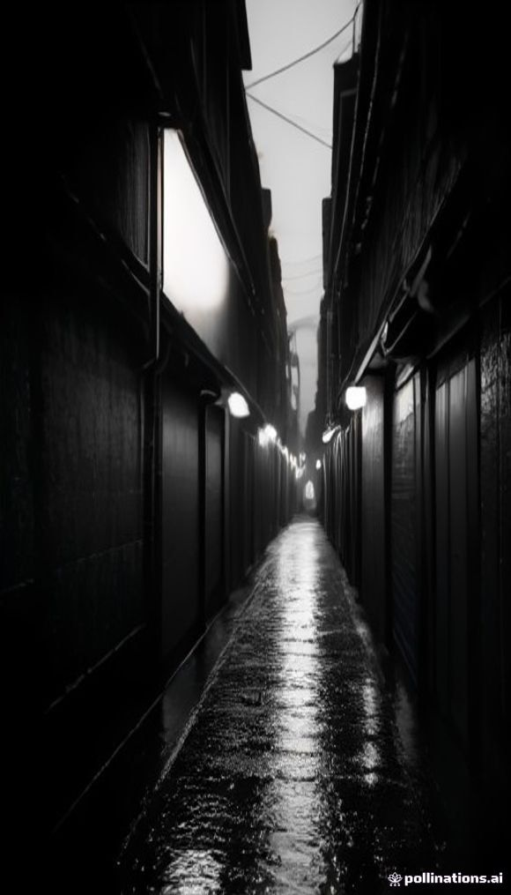
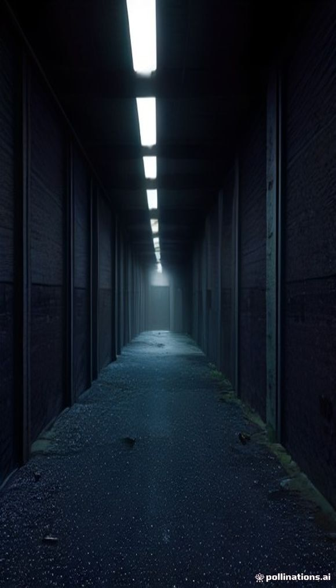
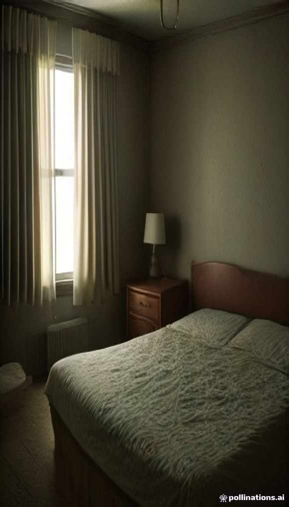
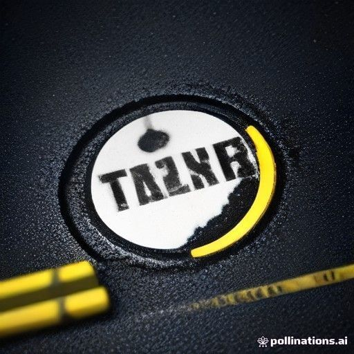

Free AI image generation — measured output
True-crime / horror prompts · 2026-10-04 · Pollinations (free, no key) · all objective metrics, no eyeballing
A. The best usable frames (9:16, 580x1015)

tc_1 — rain-soaked alleyBEST
Ymean 35.8 Y5 1.1 Y95 169.8
RMS 47.8 detail 2.11 sat 132.9

poly — warehouse
Ymean 25.8 Y5 1.0 Y95 106.5
RMS 47.8 detail 1.83 sat 139.6

p_sharp — sharp prompt+85% detail
Ymean 39.0 Y5 0.0 Y95 207.0
RMS 63.6 detail 3.38 sat 6.9
B. The failures — useful to know

hi_2 — MUDDYREJECT
Ymean 26.9 Y5 2.1 Y95 64.2
RMS 35.3 detail 2.45 sat 140.3
no highlight = no contrast = mud

tc_2 — motel roomTOO BRIGHT
Ymean 68.6 Y5 16.1 Y95 207.3
RMS 53.9 detail 2.75 sat 93.2

ref — reference
Ymean 63.8 Y5 9.8 Y95 241.0
RMS 70.4 detail 10.87 sat 83.3
sharp, but bright — the detail ceiling
Verdict
Darkness works reliably (Ymean 26-39, crushed blacks ~1.0).
Sharp-prompting took detail 1.83 → 3.38 (~85%) but collapsed saturation to 6.9 (near-monochrome).
Absolute ceiling is detail ~3.4 at 580x1015 — fine under captions + Ken Burns, weak as a hero frame.
HF Spaces all returned ZeroGPU quota exhaustion ("90s requested vs. 0s left") — needs a free HF token.